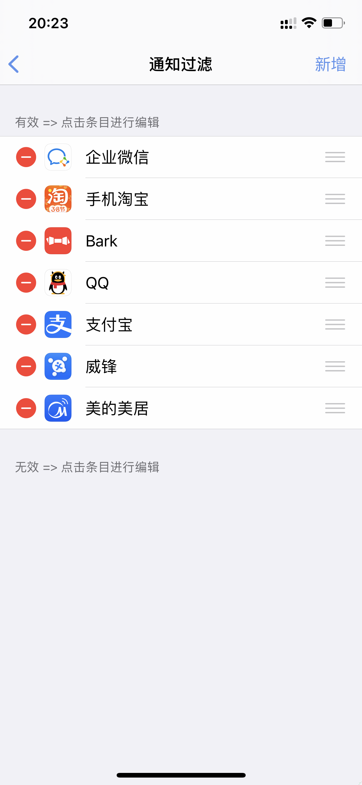
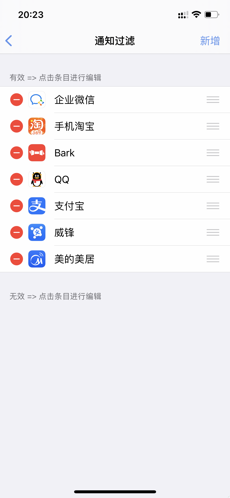

Developer
EVAN
EVAN
Compatibility: This package is compatible with iOS iOS 13.0 to 14.4.


 


这是一款颠覆通知功能的插件
使用说明：https://www.zybuluo.com/Evvvvan/note/1786417
主要功能
虚拟场景
QQ群：921346826
增加未解锁处理，提高安全性 替换的消息，点击后可以正常跳转到替换后的应用了
1.NotiXApp中的通知支持左滑后快速设置过滤条件 2.各个App支持单独设置屏蔽后的动作->屏蔽并保存到NotiXApp，显示在控制中心并控制是否亮屏及是否播放铃声 4.每次在设置中打开通知过滤时，会弹出锁屏通知上快捷操作的提示。
1.通知中心内的通知左滑后，可以使用NotiX屏蔽设置按钮快速添加规则了。(从选择中可以很容易的分辨出，从哪个字段进行规则设置了。) 2.锁屏上的提示文字现在可以设置文字大小了。 3.NotiXApp中的通知，标题和子标题变成粗体了。
修复部分用户设置规则或开关无法保存的问题
1.增加锁屏显示内容自定义 2.锁屏增加呼吸效果，可设置呼吸效果频率 3.设置支持导入 导出 及从服务器同步（导入时只显示本机已安装的应用，可以自行设置想要导入的应用）
修复某些机器上无法清空屏蔽列表的错误，从NotiXApp点击屏蔽的通知跳转到相应的App，文字标签错误修正 [清扫]=>[轻扫] ，增加图文说明的按钮
支持正则匹配，可以点击比较方法进行切换。更新UI图标。更新支持子标题。
新添加的App如果不设置条件，将会过滤该应用的所有通知。修复设置界面授权显示错误的问题
第一版